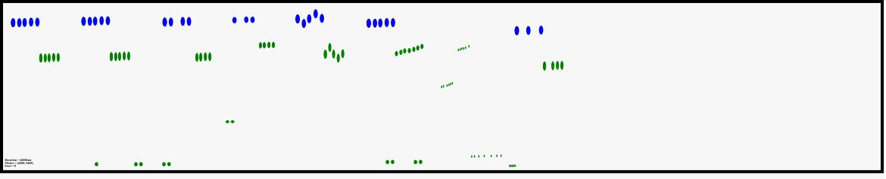

Introduction
What is py4pd?
Welcome to the py4pd documentation!
py4pd integrates the power of Python into the real-time environment of PureData, provide means for score visualization, AI integration, audio analysis tools, SVG/drawing score handling, and various other functionalities.
How to install?
To check how to install go to Installation.
Examples and Use Cases
Here is presented algorithm tools implemented with py4pd. Users are encouraged to contribute their own examples through Github.
General purposes
When I start to work with PureData, I miss a lot some score visualization tool, this can be solved by utilizing py4pd. This script is delivered along with the py4pd library.

It is easy to use AI with py4pd. There are already powerful objects for realtime, like nn~ and ddsp~, but they are designed to specify approaches. Below is an example using py4pd and the Python code used by nn~ (offline processing).
Python Code
To illustrate the statement "Python offers a more accessible and user-friendly alternative that C and C++", presented earlier, here is an example of Python code:
import pd # py4pd library
import torch # Library of AI
import librosa # Library to load audios in Python
def renderAudio_nn(audio, model):
model = pd.home() + '/' + model # get the pathname of model.ts, that is the result of the IA trained.
audio = pd.home() + '/' + audio # The audio source
torch.set_grad_enabled(False) # config of the IA
model = torch.jit.load(model).eval() # Load model of IA
x = librosa.load(audio)[0] # take the audio samples of the sound (audio)
x_for = torch.from_numpy(x).reshape(1, 1, -1) # transform the audio to fit in the IA model
z = model.encode(x_for) # tranlate for the IA thing, I believe here is the black box.
z[:, 0] += torch.linspace(-2, 2, z.shape[-1]) # No idea;
y = model.decode(z).numpy().reshape(-1) # Now we have sound again!
pd.tabwrite('iaAudio', y.tolist(), resize=True) # Here we write the sound in the table 'iaAudio'.
pd.print('Audio rendered')
In this example, I use the SVG file above to render sounds using the new else/plaits~. Besides earplug~, and cyclone/coll. The colors control the plaits~ parameters.

In Python, there is not just one Spectral Analysis package. I mainly use loristrck because of the .sdif files. But there is simpl, librosa, PyAudio_FFT, among others. If you want to spectral manipulations you can work with pysdif3 that is fast and amazing. Here an example using loristrck in PureData.

You can use some of the amazing Audio Descriptors provided by audioflux for some analisys.

Pieces
Eco (2023) is the first version of one under developing piece that use some concepts of the composer Ricardo Thomasi in his PhD research. The idea here, is to use smartphones/tablets putted in the performance music stand, to make realtime FFT and Partial Tracking and then, generate scores that are played. The smartphones/tablets send data to PureData, and using py4pd, we generate realtime scores using neoscore.
The piece Moteto aims to be a rereading of medieval motet. In addition, to overlapping independent voices, we use Just Intonation structures. With the help of technology, I aim to make the piece playable, also by amateur choirs, it is available in this website: www.charlesneimog.com/moteto/.